Social Environments for World Happiness
Introduction
This is the eighth World Happiness Report. Its central purpose remains as it was for the first Report, to review the science of measuring and understanding subjective well-being, and to use survey measures of life satisfaction to track the quality of lives as they are being lived in more than 150 countries. In addition to presenting updated rankings and analysis of life evaluations throughout the world, each World Happiness Report has a variety of topic chapters, often dealing with an underlying theme for the report as a whole. Our special focus for World Happiness Report 2020 is environments for happiness. This chapter focuses more specifically on social environments for happiness, as reflected by the quality of personal social connections and social institutions.
Before presenting fresh evidence on the links between social environments and how people evaluate their lives, we first present our analysis and rankings of national average life evaluations based on data from 2017-2019.
Our rankings of national average life evaluations are accompanied by our latest attempts to show how six key variables contribute to explaining the full sample of national annual averages from 2005-2019. Note that we do not construct our happiness measure in each country using these six factors – the scores are instead based on individuals’ own assessments of their subjective well-being, as indicated by their survey responses in the Gallup World Poll. Rather, we use the six variables to help us to understand the sources of variations in happiness among countries and over time. We also show how measures of experienced well-being, especially positive emotions, supplement life circumstances and the social environments in supporting high life evaluations. We will then consider a range of data showing how life evaluations and emotions have changed over the years covered by the Gallup World Poll.[1]
We next turn to consider social environments for happiness, in two stages. We first update and extend our previous work showing how national average life evaluations are affected by inequality, and especially the inequality of well-being. Then we turn to an expanded analysis of the social context of well-being, showing for the first time how a more supportive social environment not only raises life evaluations directly, but also indirectly, by providing the greatest gains for those most in misery. To do this, we consider two main aspects of the social environment. The first is represented by the general climate of interpersonal trust, and the extent and quality of personal contacts. The second is covered by a variety of measures of how much people trust the quality of public institutions that set the stage on which personal and community-level interactions take place.
We find that individuals with higher levels of interpersonal and institutional trust fare significantly better than others in several negative situations, including ill-health, unemployment, low incomes, discrimination, family breakdown, and fears about the safety of the streets. Living in a trusting social environment helps not only to support all individual lives directly, but also reduces the well-being costs of adversity. This provides the greatest gains to those in the most difficult circumstances, and thereby reduces well-being inequality. As our new evidence shows, to reduce well-being inequality also improves average life evaluations. We estimate the possible size of these effects later in the chapter.
Measuring and Explaining National Differences in Life Evaluations
In this section we present our usual rankings for national life evaluations, this year covering the 2017-2019 period, accompanied by our latest attempts to show how six key variables contribute to explaining the full sample of national annual average scores over the whole period 2005-2019. These variables are GDP per capita, social support, healthy life expectancy, freedom, generosity, and absence of corruption. As already noted, our happiness rankings are not based on any index of these six factors – the scores are instead based on individuals’ own assessments of their lives, as revealed by their answers to the Cantril ladder question that invites survey participants to imagine their current position on a ladder with steps numbered from 0 to 10, where the top represents the best possible and the bottom the worst possible life for themselves. We use the six variables to explain the variation of happiness across countries, and also to show how measures of experienced well-being, especially positive affect, are themselves affected by the six factors and in turn contribute to the explanation of higher life evaluations.
In Table 2.1 we present our latest modeling of national average life evaluations and measures of positive and negative affect (emotion) by country and year.[2] For ease of comparison, the table has the same basic structure as Table 2.1 in several previous editions of the World Happiness Report. We can now include 2019 data for many countries. The addition of these new data slightly improves the fit of the equation, while leaving the coefficients largely unchanged.[3] There are four equations in Table 2.1. The first equation provides the basis for constructing the sub-bars shown in Figure 2.1.
The results in the first column of Table 2.1 explain national average life evaluations in terms of six key variables: GDP per capita, social support, healthy life expectancy, freedom to make life choices, generosity, and freedom from corruption.[4] Taken together, these six variables explain three-quarters of the variation in national annual average ladder scores among countries, using data from the years 2005 to 2019. The model’s predictive power is little changed if the year fixed effects in the model are removed, falling from 0.751 to 0.745 in terms of the adjusted R-squared.
The second and third columns of Table 2.1 use the same six variables to estimate equations for national averages of positive and negative affect, where both are based on answers about yesterday’s emotional experiences (see Technical Box 1 for how the affect measures are constructed). In general, emotional measures, and especially negative ones, are differently and much less fully explained by the six variables than are life evaluations. Per-capita income and healthy life expectancy have significant effects on life evaluations, but not, in these national average data, on either positive or negative affect. The situation changes when we consider social variables. Bearing in mind that positive and negative affect are measured on a 0 to 1 scale, while life evaluations are on a 0 to 10 scale, social support can be seen to have similar proportionate effects on positive and negative emotions as on life evaluations. Freedom and generosity have even larger influences on positive affect than on the Cantril ladder. Negative affect is significantly reduced by social support, freedom, and absence of corruption.
In the fourth column we re-estimate the life evaluation equation from column 1, adding both positive and negative affect to partially implement the Aristotelian presumption that sustained positive emotions are important supports for a good life.[5] The most striking feature is the extent to which the results buttress a finding in psychology that the existence of positive emotions matters much more than the absence of negative ones when predicting either longevity[6] or resistance to the common cold.[7] Consistent with this evidence we find that positive affect has a large and highly significant impact in the final equation of Table 2.1, while negative affect has none.
As for the coefficients on the other variables in the fourth column, the changes are substantial only on those variables – especially freedom and generosity – that have the largest impacts on positive affect. Thus, we infer that positive emotions play a strong role in support of life evaluations, and that much of the impact of freedom and generosity on life evaluations is channeled through their influence on positive emotions. That is, freedom and generosity have large impacts on positive affect, which in turn has a major impact on life evaluations. The Gallup World Poll does not have a widely available measure of life purpose to test whether it too would play a strong role in support of high life evaluations.
Table 2.1: Regressions to Explain Average Happiness across Countries (Pooled OLS)
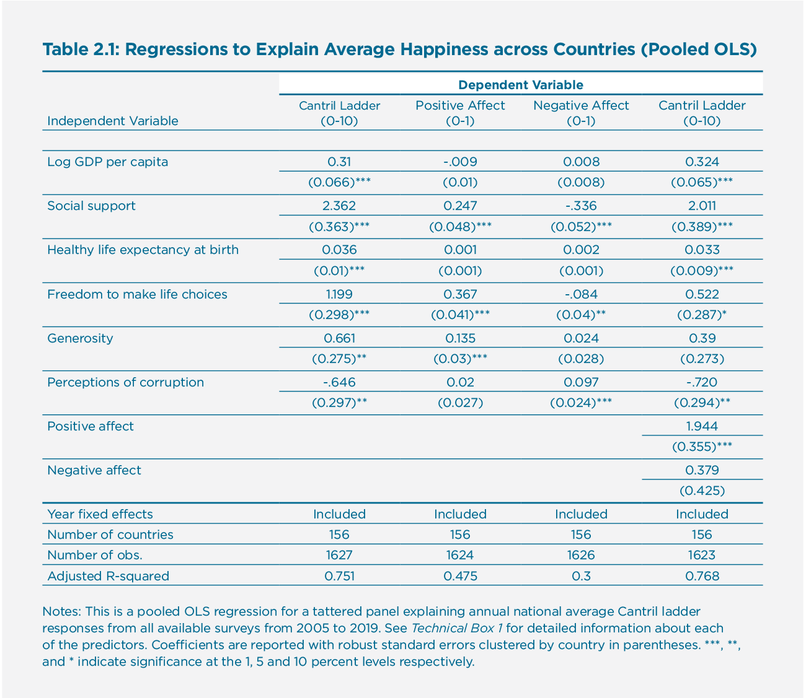
Technical Box 1: Detailed information about each of the predictors in Table 2.1
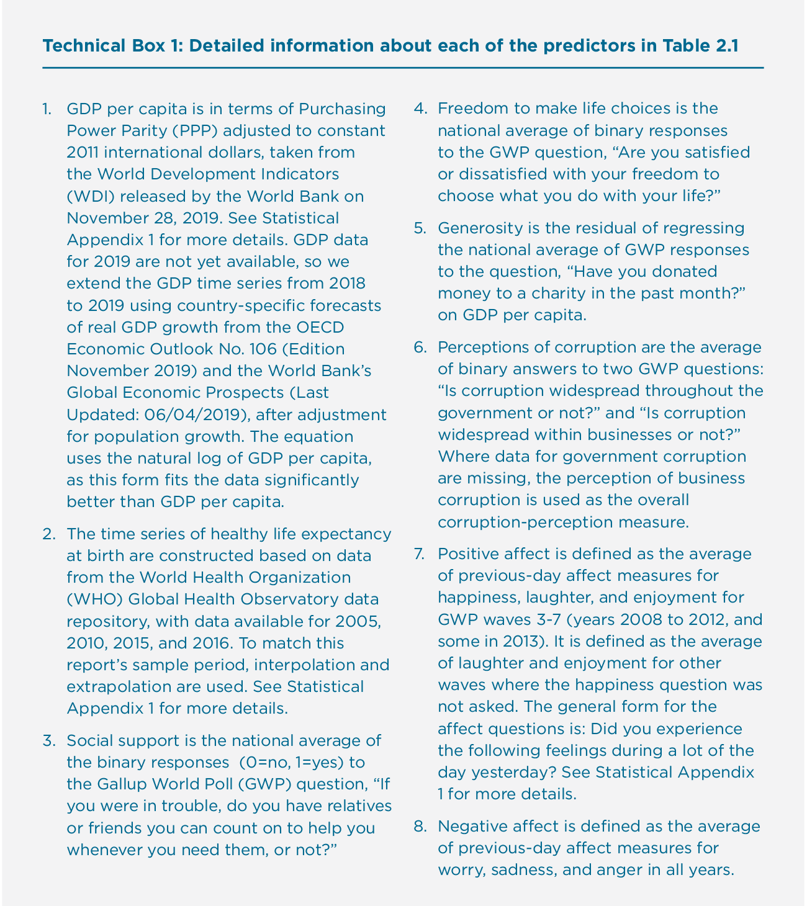
Our country rankings in Figure 2.1 show life evaluations (answers to the Cantril ladder question) for each country, averaged over the years 2017-2019. Not every country has surveys in every year; the total sample sizes are reported in Statistical Appendix 1, and are reflected in Figure 2.1 by the horizontal lines showing the 95% confidence intervals. The confidence intervals are tighter for countries with larger samples.
The overall length of each country bar represents the average ladder score, which is also shown in numerals. The rankings in Figure 2.1 depend only on the average Cantril ladder scores reported by the respondents, and not on the values of the six variables that we use to help account for the large differences we find.
Each of these bars is divided into seven segments, showing our research efforts to find possible sources for the ladder levels. The first six sub-bars show how much each of the six key variables is calculated to contribute to that country’s ladder score, relative to that in a hypothetical country called “Dystopia”, so named because it has values equal to the world’s lowest national averages for 2017-2019 for each of the six key variables used in Table 2.1. We use Dystopia as a benchmark against which to compare contributions from each of the six factors. The choice of Dystopia as a benchmark permits every real country to have a positive (or at least zero) contribution from each of the six factors. We calculate, based on the estimates in the first column of Table 2.1, that Dystopia had a 2017-2019 ladder score equal to 1.97 on the 0 to 10 scale. The final sub-bar is the sum of two components: the calculated average 2017-2019 life evaluation in Dystopia (=1.97) and each country’s own prediction error, which measures the extent to which life evaluations are higher or lower than predicted by our equation in the first column of Table 2.1. These residuals are as likely to be negative as positive.[8]
How do we calculate each factor’s contribution to average life evaluations? Taking the example of healthy life expectancy, the sub-bar in the case of Tanzania is equal to the number of years by which healthy life expectancy in Tanzania exceeds the world’s lowest value, multiplied by the Table 2.1 coefficient for the influence of healthy life expectancy on life evaluations. The width of each sub-bar then shows, country-by-country, how much each of the six variables contributes to the international ladder differences. These calculations are illustrative rather than conclusive, for several reasons. First, the selection of candidate variables is restricted by what is available for all these countries. Traditional variables like GDP per capita and healthy life expectancy are widely available. But measures of the quality of the social context, which have been shown in experiments and national surveys to have strong links to life evaluations and emotions, have not been sufficiently surveyed in the Gallup or other global polls, or otherwise measured in statistics available for all countries. Even with this limited choice, we find that four variables covering different aspects of the social and institutional context – having someone to count on, generosity, freedom to make life choices, and absence of corruption – are together responsible for more than half of the average difference between each country’s predicted ladder score and that of Dystopia in the 2017-2019 period. As shown in Statistical Appendix 1, the average country has a 2017-2019 ladder score that is 3.50 points above the Dystopia ladder score of 1.97. Of the 3.50 points, the largest single part (33%) comes from social support, followed by GDP per capita (25%) and healthy life expectancy (20%), and then freedom (13%), generosity (5%), and corruption (4%).[9]
The variables we use may be taking credit properly due to other variables, or to unmeasured factors. There are also likely to be vicious or virtuous circles, with two-way linkages among the variables. For example, there is much evidence that those who have happier lives are likely to live longer, and be more trusting, more cooperative, and generally better able to meet life’s demands.[10] This will feed back to improve health, income, generosity, corruption, and sense of freedom. In addition, some of the variables are derived from the same respondents as the life evaluations and hence possibly determined by common factors. There is less risk when using national averages, because individual differences in personality and many life circumstances tend to average out at the national level.
To provide more assurance that our results are not significantly biased because we are using the same respondents to report life evaluations, social support, freedom, generosity, and corruption, we tested the robustness of our procedure (see Table 10 of Statistical Appendix 1of World Happiness Report 2018 for more detail) by splitting each country’s respondents randomly into two groups. We then used the average values from one half the sample for social support, freedom, generosity, and absence of corruption to explain average life evaluations in the other half. The coefficients on each of the four variables fell slightly, just as we expected.[11] But the changes were reassuringly small (ranging from 1% to 5%) and were not statistically significant.[12]
The seventh and final segment in each bar is the sum of two components. The first component is a fixed number representing our calculation of the 2017-2019 ladder score for Dystopia (=1.97). The second component is the average 2017-2019 residual for each country. The sum of these two components comprises the right-hand sub-bar for each country; it varies from one country to the next because some countries have life evaluations above their predicted values, and others lower. The residual simply represents that part of the national average ladder score that is not explained by our model; with the residual included, the sum of all the sub-bars adds up to the actual average life evaluations on which the rankings are based.
Figure 2.1: Ranking of Happiness 2017–2019 (Part 1)
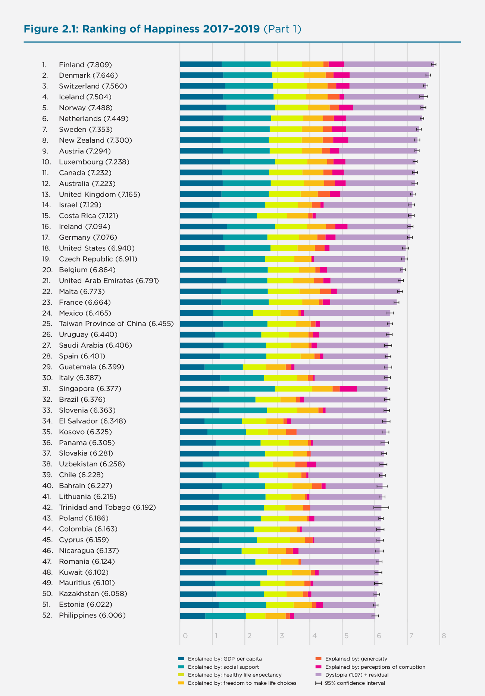
Figure 2.1: Ranking of Happiness 2017–2019 (Part 2)
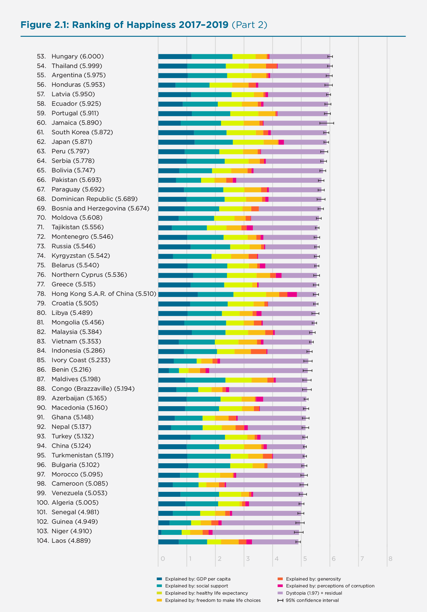
Figure 2.1: Ranking of Happiness 2017–2019 (Part 3)
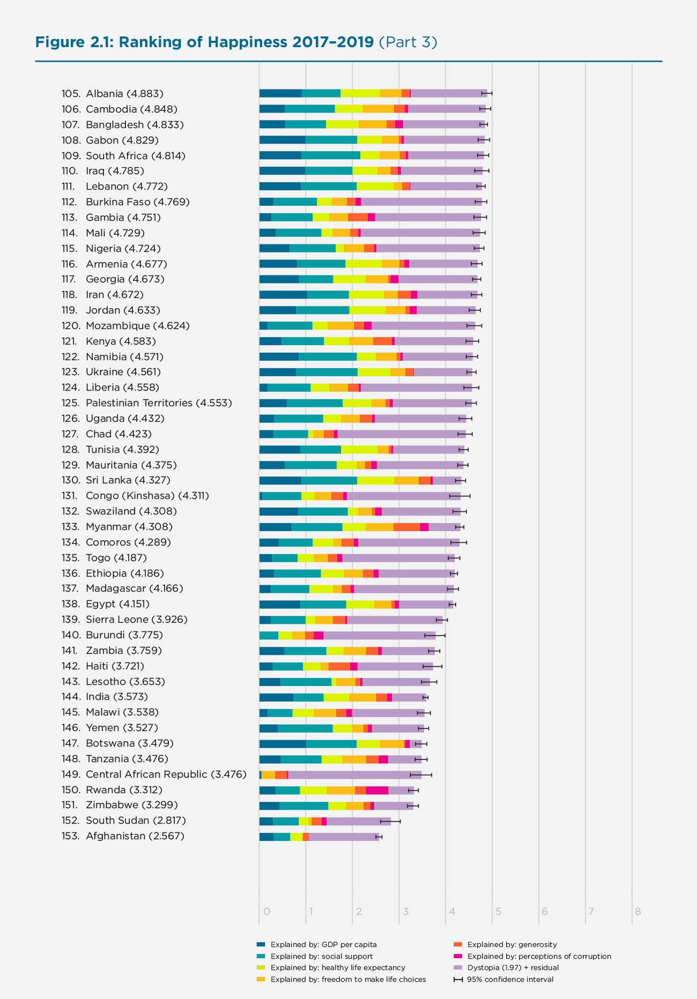
What do the latest data show for the 2017-2019 country rankings? Two features carry over from previous editions of the World Happiness Report. First, there is still a lot of year-to-year consistency in the way people rate their lives in different countries, and since we do our ranking on a three-year average, there is information carried forward from one year to the next. Nonetheless, there are interesting changes. Finland reported a modest increase in happiness from 2015 to 2017, and has remained roughly at that higher level since then (See Figure 1 of Statistical Appendix 1 for individual country trajectories). As a result, dropping 2016 and adding 2019 further boosts Finland’s world-leading average score. It continues to occupy the top spot for the third year in a row, and with a score that is now significantly ahead of other countries in the top ten.
Denmark and Switzerland have also increased their average scores from last year’s rankings. Denmark continues to occupy second place. Switzerland, with its larger increase, jumps from 6th place to 3rd. Last year’s third ranking country, Norway, is now in 5th place with a modest decline in average score, most of which occurred around between 2017 and 2018. Iceland is in 4th place; its new survey in 2019 does little to change its 3-year average score. The Netherlands slipped into 6th place, one spot lower than in last year’s ranking. The next two countries in the ranking are the same as last year, Sweden and New Zealand in 7th and 8th places, respectively, both with little change in their average scores. In 9th and 10th place are Austria and Luxembourg, respectively. The former is one spot higher than last year. For Luxembourg, this year’s ranking represents a substantial upward movement; it was in 14th place last year. Luxembourg’s 2019 score is its highest ever since Gallup started polling the country in 2009.
Canada slipped out of the top ten, from 9th place last year to 11th this year. Its 2019 score is the lowest since the Gallup poll begins for Canada in 2005.[13] Right after Canada is Australia in 12th, followed by United Kingdom in 13th, two spots higher than last year, and five positions higher than in the first World Happiness Report in 2012.[14] Israel and Costa Rica are the 14th and 15th ranking countries. The rest of the top 20 include four European countries: Ireland in 16th, Germany in 17th, Czech Republic in 19th and Belgium in 20th. The U.S. is in 18th place, one spot higher than last year, although still well below its 11th place ranking in the first World Happiness Report. Overall the top 20 are all the same as last year’s top 20, albeit with some changes in rankings. Throughout the top 20 positions, and indeed at most places in the rankings, the three-year average scores are close enough to one another that significant differences are found only between country pairs that are several positions apart in the rankings. This can be seen by inspecting the whisker lines showing the 95% confidence intervals for the average scores.
There remains a large gap between the top and bottom countries. Within these groups, the top countries are more tightly grouped than are the bottom countries. Within the top group, national life evaluation scores have a gap of 0.32 between the 1st and 5th position, and another 0.25 between 5th and 10th positions. Thus, there is a gap of about 0.6 points between the 1st and 10th positions. There is a bigger range of scores covered by the bottom ten countries, where the range of scores covers almost an entire point. Tanzania, Rwanda and Botswana still have anomalous scores, in the sense that their predicted values, based on their performance on the six key variables, would suggest much higher rankings than those shown in Figure 2.1. India now joins the group sharing the same feature. India is a new entrant to the bottom-ten group. Its large and steady decline in life evaluation scores since 2015 means that its annual score in 2019 is now 1.2 points lower than in 2015.
Despite the general consistency among the top country scores, there have been many significant changes among the rest of the countries. Looking at changes over the longer term, many countries have exhibited substantial changes in average scores, and hence in country rankings, between 2008-2012 and 2017-2019, as will be shown in more detail in Figure 2.4.
When looking at average ladder scores, it is also important to note the horizontal whisker lines at the right-hand end of the main bar for each country. These lines denote the 95% confidence regions for the estimates, so that countries with overlapping error bars have scores that do not significantly differ from each other. The scores are based on the resident populations in each country, rather than their citizenship or place of birth. In World Happiness Report 2018 we split the responses between the locally and foreign-born populations in each country, and found the happiness rankings to be essentially the same for the two groups, although with some footprint effect after migration, and some tendency for migrants to move to happier countries, so that among 20 happiest countries in that report, the average happiness for the locally born was about 0.2 points higher than for the foreign-born.[15]
Average life evaluations in the top ten countries are more than twice as high as in the bottom ten. If we use the first equation of Table 2.1 to look for possible reasons for these very different life evaluations, it suggests that of the 4.16 points difference, 2.96 points can be traced to differences in the six key factors: 0.94 points from the GDP per capita gap, 0.79 due to differences in social support, 0.62 to differences in healthy life expectancy, 0.27 to differences in freedom, 0.25 to differences in corruption perceptions, and 0.09 to differences in generosity.[16] Income differences are the single largest contributing factor, at one-third of the total, because of the six factors, income is by far the most unequally distributed among countries. GDP per capita is 20 times higher in the top ten than in the bottom ten countries.[17]
Overall, the model explains average life evaluation levels quite well within regions, among regions, and for the world as a whole.[18] On average, the countries of Latin America still have mean life evaluations that are higher (by about 0.6 on the 0 to 10 scale) than predicted by the model. This difference has been attributed to a variety of factors, including some unique features of family and social life in Latin American countries. To explain what is special about social life in Latin America, Chapter 6 of World Happiness Report 2018 by Mariano Rojas presented a range of new data and results showing how a generation-spanning social environment supports Latin American happiness beyond what is captured by the variables available in the Gallup World Poll. In partial contrast, the countries of East Asia have average life evaluations below those predicted by the model, a finding that has been thought to reflect, at least in part, cultural differences in the way people answer questions.[19] It is reassuring that our findings about the relative importance of the six factors are generally unaffected by whether or not we make explicit allowance for these regional differences.[20]
Our main country rankings are based on the average answers to the Cantril ladder life evaluation question in the Gallup World Poll. The other two happiness measures, for positive and negative affect, are themselves of independent importance and interest, as well as being contributors to overall life evaluations, especially in the case of positive affect. Measures of positive affect also play important roles in other chapters of this report, in large part because most lab experiments, being of relatively small size and duration, can be expected to affect current emotions but not life evaluations, which tend to be more stable in response to small or temporary disturbances. Various attempts to use big data to measure happiness using word analysis of Twitter feeds, or other similar sources, are likely to capture mood changes rather than overall life evaluations. In World Happiness Report 2019 we presented comparable rankings for all three of the measures of subjective well-being that we track: the Cantril ladder, positive affect, and negative affect, accompanied by country rankings for the six variables we use in Table 2.1 to explain our measures of subjective well-being. Comparable data for 2017-2019 are reported in Figures 19 to 42 of Statistical Appendix 1.
Changes in World Happiness
As in Chapter 2 of World Happiness Report 2019, we start by showing the global and regional trajectories for life evaluations, positive affect, and negative affect between 2006 and 2019. This is done in the four panels of Figure 2.2.[21] The first panel shows the evolution of global life evaluations measured three different ways. Among the three lines, two lines cover the whole world population (age 15+), with one of the two weighting the country averages by each country’s share of the world population, and the other being an unweighted average of the individual national averages. The unweighted average is often above the weighted average, especially after 2015, when the weighted average starts to drop significantly, while the unweighted average starts to rise equally sharply. This suggests that the recent trends have not favoured the largest countries, as confirmed by the third line, which shows a population-weighted average for all countries in the world except the five countries with the largest populations – China, India, the United States, Indonesia, and Brazil. Even with the five largest countries removed, the population-weighted average does not rise as fast as the unweighted average, suggesting that smaller countries have had greater happiness growth since 2015 than have the larger countries. To expose the different trends in different parts of the world, the second panel of Figure 2.2 shows the dynamics of life evaluations in each to ten global regions, with population weights used to construct the regional averages.
The regions with the highest average evaluations are Northern American plus Australasian region, Western Europe, and the Latin America Caribbean region. Northern America plus Australasia, though they always have the highest life evaluations, show an overall declining trend since 2007. The level in 2019 was 0.5 points lower than that in 2007. Western Europe shows a U-shape, with a flat bottom spanning from 2008 to 2015. The Latin America Caribbean region shows an inverted U-shape with the peak in 2013. Since then, the level of life evaluations has fallen by about 0.6 points. All other regions except Sub-Saharan Africa were almost in the same cluster before 2010. Large divergences have emerged since. Central and Eastern Europe’s life evaluations achieved a continuous and remarkable increase (by over 0.8 points), and caught up with Latin American and Caribbean region in the most recent two years. South Asia, by contrast, has continued to show falling life evaluations, amounting to a cumulative decrease of more than 1.3 points, by far the largest regional change. The country data in Figure 1 of Statistical Appendix 1 shows the South Asian trend to be dominated by India, with its large population and sharply declining life evaluations. The Middle East and North Africa (MENA) also shows a long-term declining trend, though with a rebound in 2014. Comparing 2019 to 2009, the decrease in life evaluations in MENA is over 0.5 points.
East Asia, Southeast Asia, and the Commonwealth of Independent States (CIS) remain largely stable since 2011. The key difference is that East Asia and the CIS suffered significantly in the 2008 financial crisis, while life evaluations in Southeast Asia were largely unaffected. Sub-Saharan Africa has significantly lower level of life evaluations than any other region, particularly before 2016. Its level has remained fairly stable since, though with some decrease in 2013 and then a recovery until 2018. In the meantime, South Asia’s life evaluations worsened dramatically so that its average life evaluations since 2017 are significantly below those in Sub-Saharan Africa, with no sign of recovery.
We next examine the global pattern of positive and negative affect in the third and fourth panels of Figure 2.2. Each figure has the same structure for life evaluations as in the first panel. There is no striking trend in the evolution of positive affect, except that the population-weighted series excluding the five largest countries declined mildly since 2010. The population-weighted series show slightly, but significantly, more positive affect than does the unweighted series, showing that positive affect is on average higher in the larger countries.
In contrast to the relative stability of positive affect over the study period, there has been a rapid increase in negative affect, as shown in the last panel of Figure 2.2. All three lines consistently show a generally increasing trend since 2010 or 2011, indicating that citizens in both large and small countries have experienced increasing negative affect. The increase is sizable. In 2011, about 22% of world adult population reported negative affect, increasing to 29.3% in 2019. In other words, the share of adults reporting negative affect increased by almost 1% per year during this period. Seen in the context of political polarization, civil and religions conflicts, and unrest in many countries, these results created considerable interest when first revealed in World Happiness Report 2019. Readers were curious to know in particular which negative emotions were responsible for this increase. We have therefore unpacked the changes in negative affect into their three components: worry, sadness, and anger.
Figure 2.2: World Dynamics of Happiness
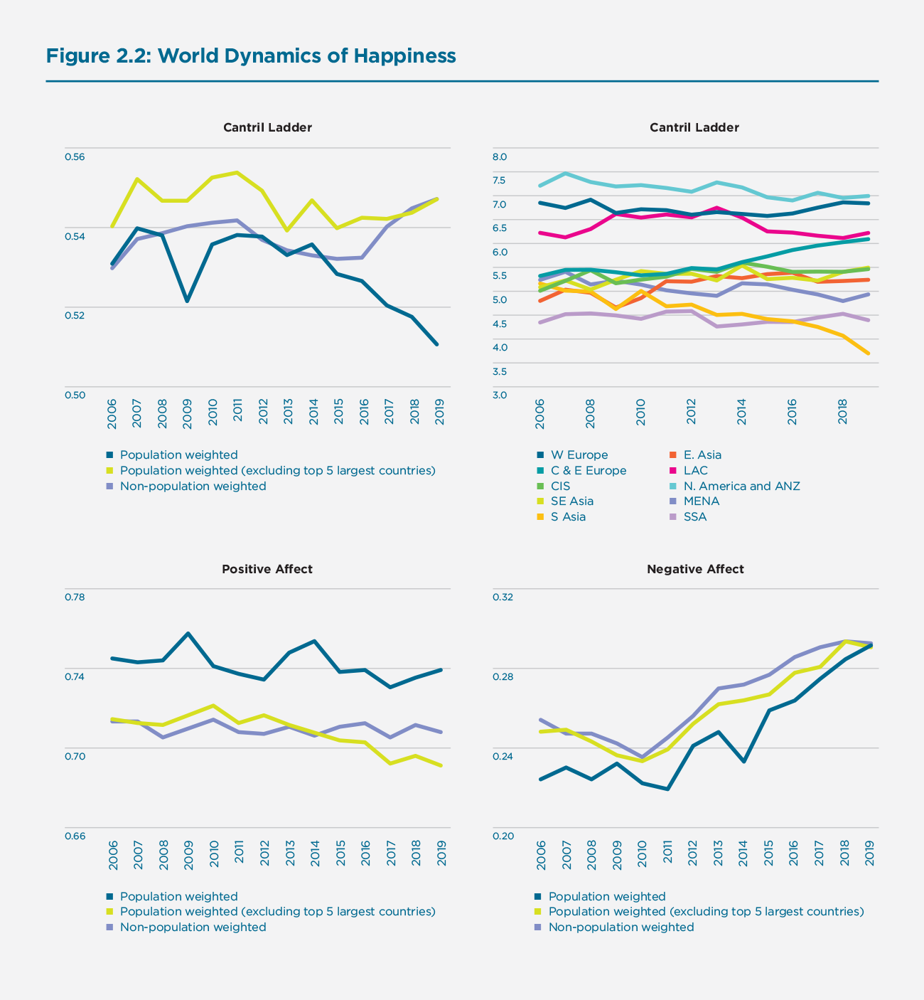
Figure 2.3 illustrates the global trends for worry, sadness, and anger, while the changes for each individual country are shown in Tables 16 to 18 of Statistical Appendix 1. Figure 2.3, like Figure 2.2, shows three lines for each emotion, representing a population-weighted average, a population-weighted average excluding the five most populous countries, and an unweighted average. The first panel shows the trends for worry. The three lines move in the same direction, starting to increase about 2010. People reporting worry yesterday increased by around 8~10% in the 9 years span. Sadness is much less frequent than worry, although the trend is very similar. The share of respondents reporting sadness yesterday increases by around 7~9% since 2010 or 2011. Anger yesterday in the third panel also shows an upward trend in recent years, but contributes very little to the rising trend for negative affect. The rise is almost entirely due to sadness and worry, with the latter being a slightly bigger contributor. Comparable data for other emotions, including stress, are shown in Statistical Appendix 2.
Figure 2.3: World Dynamics of Components of Negative Affect
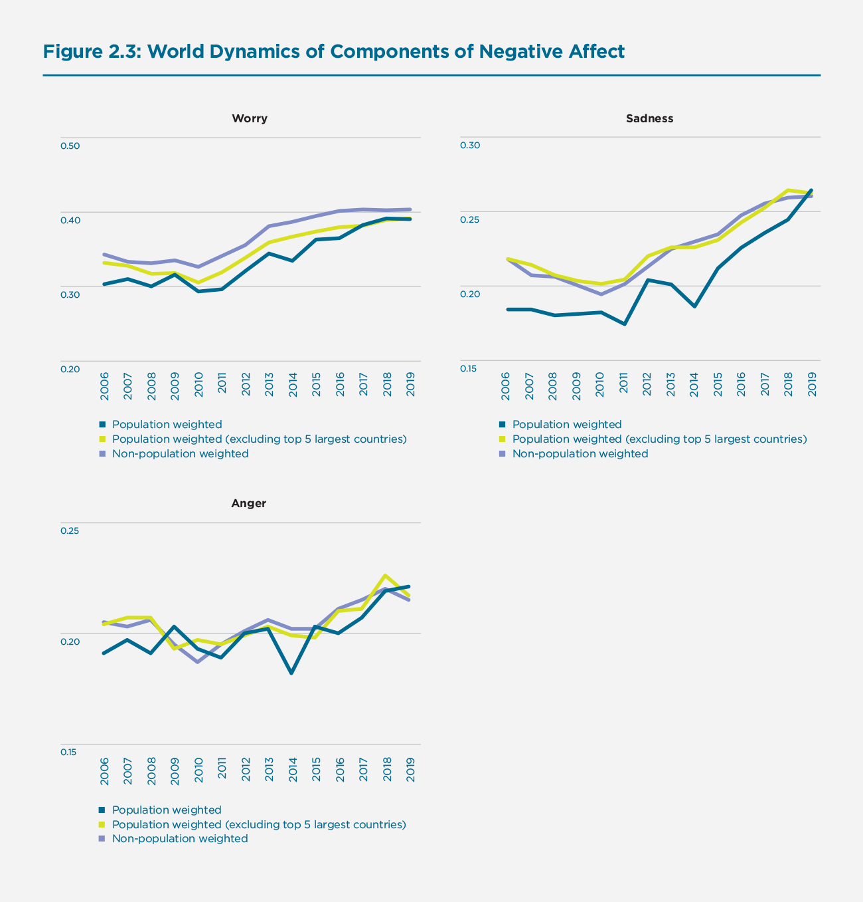
We now turn to our country-by-country ranking of changes in life evaluations. The year-by-year data for each country are shown, as always, in Figure 1 of online Statistical Appendix 1, and are also available in the online data appendix. Here we present a ranking of the country-by-country changes from a five-year starting base of 2008-2012 to the most recent three-year sample period, 2017-2019. We use a five-year average to provide a more stable base from which to measure changes. In Figure 2.4 we show the changes in happiness levels for all 149 countries that have sufficient numbers of observations for both 2008-2012 and 2017-2019.
Figure 2.4: Changes in Happiness from 2008-2012 to 2017-2019 (Part 1)
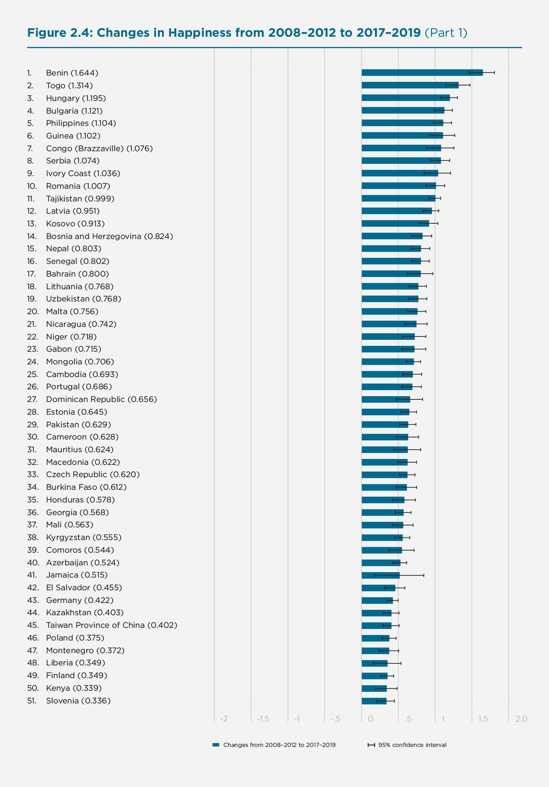
Figure 2.4: Changes in Happiness from 2008-2012 to 2017-2019 (Part 2)
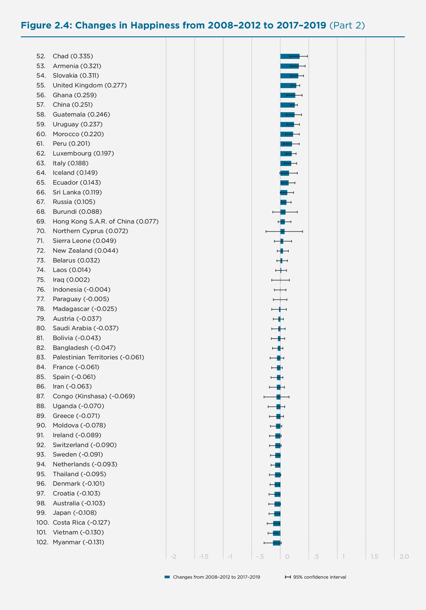
Figure 2.4: Changes in Happiness from 2008-2012 to 2017-2019 (Part 3)
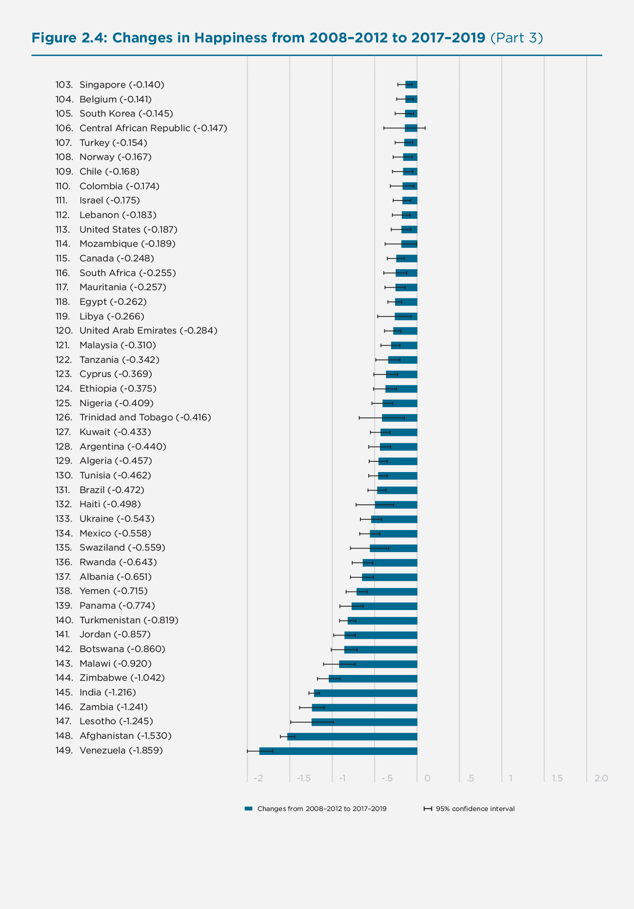
Of the 149 countries with data for 2008-2012 and 2017-2019, 118 had significant changes. 65 were significant increases, ranging from around 0.11 to 1.644 points on the 0 to 10 scale. There were also 53 significant decreases, ranging from around -0.13 to –1.86 points, while the remaining 31 countries revealed no significant trend from 2005-2008 to 2016-2018. As shown in Table 36 in Statistical Appendix 1, the significant gains and losses are very unevenly distributed across the world, and sometimes also within continents. In Central and Eastern Europe, there were 15 significant gains against only two significant declines, while in Middle East and North Africa there were 11 significant losses compared to two significant gains. The Commonwealth of Independent States was a significant net gainer, with eight gains against two losses. In the Northern American and Australasian region, the four countries had two significant declines and no significant gains. The 36 Sub-Saharan African countries showed a real spread of experiences, with 17 significant gainers and 13 significant losers. The same is true for Western Europe, with 7 gainers and 6 losers. The Latin America and Caribbean region had 9 gainers and 10 losers. In East, South and Southeast Asia, most countries had significant changes, with a fairly even balance between gainers and losers.
Among the 20 top gainers, all of which showed average ladder scores increasing by more than 0.75 points, ten are in the Commonwealth of Independent States or Central and Eastern Europe, and six are in Sub-Saharan Africa. The other four are Bahrain, Malta, Nepal and the Philippines. Among the 20 largest losers, all of which show ladder reductions exceeding 0.45 points, seven are in Sub-Saharan Africa, five in the Latin America and Caribbean region with Venezuela at the very bottom, three in the Middle East and North Africa including Yemen, and two in the Commonwealth of Independent States including Ukraine. The remaining three are Afghanistan, Albania, and India.
These changes are very large, especially for the ten most affected gainers and losers. For each of the ten top gainers, the average life evaluation gains were more than would be expected from a tenfold increase of per capita incomes. For each of the ten countries with the biggest drops in average life evaluations, the losses were more than four times as large as would be expected from a halving of GDP per capita.
On the gaining side of the ledger, the inclusion of a substantial number of transition countries among the top gainers reflects rising life evaluations for the transition countries taken as a group. The appearance of Sub-Saharan African countries among the biggest gainers and the biggest losers reflects the variety and volatility of experiences among the Sub-Saharan countries for which changes are shown in Figure 2.8, and whose experiences were analyzed in more detail in Chapter 4 of World Happiness Report 2017. Benin, the largest gainer over the period, by more than 1.6 points, ranked 4th from last in the first World Happiness Report and has since risen close to the middle of the ranking (86 out of 153 countries this year).
The ten countries with the largest declines in average life evaluations typically suffered some combination of economic, political, and social stresses. The five largest drops since 2008-2012 were in Venezuela, Afghanistan, Lesotho, Zambia, and India, with drops over one point in each case, the largest fall being almost two points in Venezuela. In previous rankings using the base period 2005-2008, Greece was one of the biggest losers, presumably because of the impact of the financial crisis. Now with the base period shifted to the post-crisis years from 2008 to 2012, there has been little net gain or loss for Greece. But the annual data for Greece in Figure 1 of Statistical Appendix 1 do show a U-shape recovery from a low point in 2013 and 2014.
Inequality and Happiness
Previous reports have emphasized the importance of studying the distribution of happiness as well as its average levels. We did this using bar charts showing for the world as a whole and for each of ten global regions the distribution of answers to the Cantril ladder question asking respondents to value their lives today on a scale of 0 to 10, with 0 representing the worst possible life, and 10 representing the best possible life. This gave us a chance to compare happiness levels and inequality in different parts of the world. Population-weighted average life evaluations differed significantly among regions from the highest evaluations in Northern America and Oceania, followed by Western Europe, Latin America and the Caribbean, Central and Eastern Europe, the Commonwealth of Independent States, East Asia, Southeast Asia, The Middle East and North Africa, Sub-Saharan Africa, and South Asia, in that order. We found that well-being inequality, as measured by the standard deviation of the distributions of individual life evaluations, was lowest in Western Europe, Northern America and Oceania, and South Asia, and greatest in Latin America, Sub-Saharan Africa, and the Middle East and North Africa.[22] What about changes in well-being inequality? Since 2012, well-being inequality has increased significantly in most regions, including especially South Asia, Southeast Asia, Sub-Saharan Africa, the Middle East and North Africa, and the CIS (with Russia dominating the population total), while falling insignificantly in Western Europe and Central and Eastern Europe.
In this section we assess how national changes in the distribution of happiness might influence the average national level of happiness. Although most studies of inequality have focused on inequality in the distribution of income and wealth,[23] we argued in Chapter 2 of World Happiness Report 2016 Update that just as income is too limited an indicator for the overall quality of life, income inequality is too limited a measure of overall inequality.[24] For example, inequalities in the distribution of health[25] have effects on life satisfaction above and beyond those flowing through their effects on income. We and others have found that the effects of happiness inequality are often larger and more systematic than those of income inequality.[26] For example, social trust, often found to be lower where income inequality is greater, is more closely connected to the inequality of subjective well-being than it is to income inequality.[27]
To extend our earlier analysis of the effects of well-being inequality we now consider a broader range of measures of well-being inequality. In our previous work we mainly measured the inequality of well-being in terms of its standard deviation. Since then we have found evidence[28] that the shape of the well-being distribution is better and more flexibly captured by a ratio of percentiles, for example, the average life evaluation at the 80th percentile divided by that at the 20th percentile. Using this and other new ways of measuring the distribution of well-being we continue to find that well-being inequality is consistently stronger than income inequality as a predictor of life evaluations. Statistical Appendix 3 provides a full set of our estimation results; here we shall report only a limited set. Table 2.2 shows an alternative version of Table 2.1 of World Happiness Report 2019 in which we have added a variable equal to the ratio of the 80th and 20th percentiles of a distribution of predicted values for individual life evaluations. As explained in detail in Statistical Appendix 3, we use the 80/20 ratio because it provides marginally the best fit of the alternatives tested, and we use its predicted value in order to provide a more continuous ranking across countries. Our use of the predicted values also helps to avoid any risk that our measure is contaminated by being derived directly from the same data as the life evaluations themselves.[29] The calculated 80/20 ratio adds to the explanation provided by the six-factor explanation of Table 2.1. The left-hand columns of Table 2.2 use national aggregate panel data for comparability with Table 2.1, while the right-hand columns are based on individual responses.
Table 2.2: Estimating the effects of well-being inequality on average life evaluations
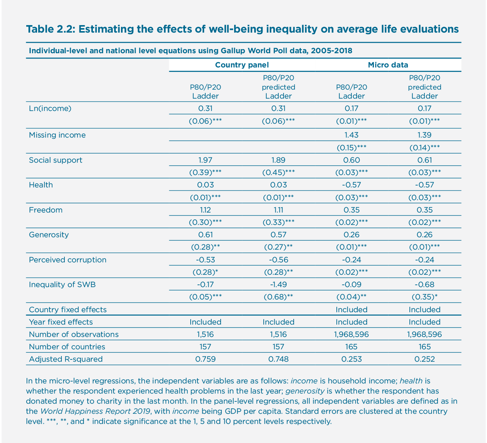
Inequality matters, such that increasing well-being inequality by two standard deviations (covering about two thirds of the countries) in the country panel regressions would be associated with life evaluations about 0.2 points lower on the 0 to 10 scale used for life evaluations. This result helps to motivate the next section, wherein we consider how a higher quality of social environment not only raises the average quality of lives directly, but also reduces their inequality.[30]
Assessing the Social Environments Supporting World Happiness
In World Happiness Report 2017, we made a special review of the social foundations of happiness. In this report we return to dig deeper into several aspects of the social environments for happiness. The social environments influencing happiness are diverse and interwoven, and likely to differ within and among communities, nations and cultures. We have already seen in earlier World Happiness Reports that different aspects of the social environment, as represented by the combined impact of the four social environment variables—having someone to count on, trust (as measured by the absence of corruption), a sense of freedom to make key life decisions, and generosity—together account for as much as the combined effects of income and healthy life expectancy in explaining the life evaluation gap between the ten happiest and the ten least happy countries in World Happiness Report 2019.[31] In this section we dig deeper in an attempt to show how the social environment, as reflected in the quality of neighbourhood and community life as well as in the quality of various public institutions, enables people to live better lives. We will also show that strong social environments, by buffering individuals and communities against the well-being consequences of adverse events, are predicted to reduce well-being inequality. As we will show, this happens because those who gain most from positive social environments are those most subject to adversity, and are hence likely to fall at the lower end of the distribution of life evaluations within a community or nation.
We consider individual and community-level measures of social capital, and people’s trust in various aspects of the quality of government services and institutions as separate sources of happiness. Both types of trust affect life evaluations directly and also indirectly, as protective buffers against adversity and as substitutes for income as means of achieving better lives.
Government institutions and policies deserve to be treated as part of the social environment, as they set the stages on which lives are lived. These stages differ from country to country, from community to community, and even from year to year. The importance of international differences in the social environment was shown forcefully in World Happiness Report 2018, which presented separate happiness rankings for immigrants and the locally-born, and found them to be almost identical (a correlation of +0.96 for the 117 countries with a sufficient number of immigrants in their sampled populations). This was the case even for migrants coming from source countries with life evaluations less than half as high as in the destination country. This evidence from the happiness of immigrants and the locally-born suggests strongly that the large international differences in average national happiness documented in each World Happiness Report depend primarily on the circumstances of life in each country.[32]
In Chapter 2 of World Happiness Report 2017 we dealt in detail with the social foundations of happiness, while in Chapter 2 of World Happiness Report 2019 we presented much evidence on how the quality of government affects life evaluations. In this chapter, we combine these two strands of research with our analysis of the effects of inequality. In this new research we are able to show that social connections and the quality of social institutions have primary direct effects on life evaluations, and also provide buffers to reduce happiness losses from several life challenges. These indirect or protective effects are of special value to people most at risk, so that happiness increases more for those with the lowest levels of well-being, thereby reducing inequality. A strong social environment thus allows people to be more resilient in the face of life’s hardships.
Strong social environments provide buffers against adversity
To test the possibility that strong social environments can provide buffers against life challenges, we estimate the extent to which a strong social environment lowers the happiness loss that would otherwise be triggered by adverse circumstances. Table 2.3 shows results from a life satisfaction equation based on nine waves of the European Social Survey, covering 2002-2018. We use that survey for our illustration, even though it has fewer countries than some other surveys because it has a larger range of trust variables, all measured on a 0 to 10 scale giving them more explanatory power than is provided by variables with 0 and 1 as the only possible answers. The equation is estimated using data from approximately 375,000 respondents in 35 countries.[33] We use fixed effects for survey waves and for countries, thereby helping to ensure that our results are based on what is happening within each country.
Table 2.3: Interaction of social environment with risks and supports for life evaluations in the ESS
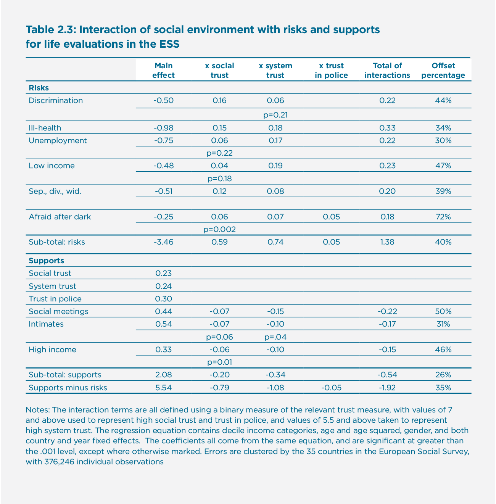
The top part of Table 2.3 shows the effects of risks to life evaluations. These risks include a variety of different challenges to well-being, including discrimination, ill-health, unemployment, low income, loss of family support (through separation, divorce or spousal death), or lack of perceived night-time safety, for respondents with relatively low trust in other people and in public institutions. For example, respondents who describe themselves as belonging to a group that is discriminated against in their country have life evaluations that are on average lower by half a point on the 0 to 10 scale. Life evaluations are almost a full point lower for those in poor rather than good health.[34] Unemployment has a negative life evaluation effect of three-quarters of a point. To have low income, as defined here as being in the bottom quintile of the income distribution, with the middle three quintiles as the basis for comparison, has a negative impact of almost half a point, similar to the impact of separation, divorce, or widowhood. The final risk to the social environment is faced by those who are afraid to be in the streets after dark, for whom life evaluations are lower by one-quarter of a point. These impacts are all estimated in the same equation so that their effects can be added up to apply to any individual who is in more than one of the categories. The sub-total shows that someone in a low trust environment who faces all of these circumstances is estimated to have a life evaluation almost 3.5 points lower than someone who face none of these challenges. Statistical Appendix 3 contains the full results for this equation. The Appendix also shows results estimated separately for males and females. The coefficients are similar, with a few interesting differences.[35]
The next columns show the extent to which those who judge themselves to live in high-trust environments are buffered against some of the well-being costs of misfortune. This is done separately for inter-personal trust, average confidence in a range of state institutions, and trust in police, where the latter is considered to be of independent importance for those who describe themselves as being afraid in the streets after dark. The effects estimated are known as interaction effects, since they estimate the offsetting change in well-being for someone who is subject to the hardship in question, but lives in a high-trust environment.[36] The interaction effects are usually assumed to be zero, implying, for example, that being in a high-trust environment has the same well-being effects for the unemployed as for the employed, and so on. Once we started to investigate these interactions, we discovered them to be highly significant in statistical, economic, and social terms, and hence demanding of more of our attention.[37]
For this chapter we have expanded our earlier analysis to cover the buffering effects of two types of trust (social and institutional) in reducing the well-being costs of six types of adversity: discrimination,[38] ill-health,[39] unemployment, low income,[40][41] loss of marital partner (through separation, divorce, or death), and fear of being in the streets after dark. The total number of risk interactions tested rises to 13 because we surmised, and found, that trust in police might mitigate the well-being costs of unsafe streets. Of these 13 interaction terms tested in the upper part of Table 2.3, nine are estimated to have a very high degree of statistical significance (p<0.001). For the remaining four coefficients, the statistical significance is shown. The less significant effects are where they might be expected. For those feeling subject to discrimination, social trust provides a stronger buffer than does trust in public institutions, with the reverse being the case for unemployment, where a number of public programs are often in play to support those who are unemployed.
For every one of the identified risks to well-being, a stronger social environment provides significant buffering against loss of well-being, ranging from 30% to over 70% for the separate risks, and averaging 40%. The credit for this extra well-being resilience is slightly more due to system trust than to social trust, responsible for 0.59 and 0.74 points of well-being recovered, respectively, for those who are subjected to the listed risks. The underlying rationale for these interaction effects differs in detail from risk to risk, with a common thread being that living in a supportive social environment provides people in hardship with extra personal and institutional support to help them face difficult circumstances.
In the rest of the table, we look at the reverse side of the same coin. The bottom part of Table 2.3 shows, in its first column, the direct effects of several supports to life evaluations, including social trust, trust in public institutions, trust in police, frequent social meetings, having at least one close friend or relative with whom to discuss personal matters, and having household income falling in the top quintile, relative to those in the three middle quintiles. Someone who has all of those supports has life evaluations almost 2.1 points higher than someone who has none of them before accounting for the offsetting interaction effects. The direct effects of the three trust measures are each estimated to fall in the range of 0.23 to 0.3 points, totaling three-quarters of a point.[42]
We then ask, in the subsequent columns, whether the well-being benefits of frequent social meetings, of having intimates available for the discussion of personal matters, and having a high income (as indicated by being in the top income quintile, relative to those in the three middle quintiles) are of equal value for those in high and low trust social environments. The theory supporting the risk results reported above would suggest that the benefits of closer personal networks and high incomes are both likely to be less for those who are living in broader social networks that are more supportive. For those without confidence in the broader social environment, there is more need for, and benefit from, more immediate social networks. Similarly, higher income can be used to purchase some substitute for the benefits of a more trustworthy environment, e.g. defensive expenditures of the sort symbolized by gated communities.
The interaction effects for the well-being supports, as shown in Table 2.4, are as predicted above. The high-trust offsets have the expected signs, ranging from 31% to half (in the case of social meetings) of the well-being advantages of having the support in question, totaling 0.54 points, or 26% of the main effects plus the three supports.
Bringing the top and bottom halves of Table 2.3 together, two results are clear. First, there are large estimated well-being differences between those in differing life circumstances, and these effects differ by type of risk and by the extent to which there is a buffering social environment. Ignoring for a moment the buffers provided by a positive social environment, someone living in a low trust environment suffering from all six risks is estimated to have a life evaluation that is lower by almost 3.5 points on the 10-point scale when compared to someone facing none of those risks. On the support side of the ledger, someone in the top income quintile with a close confidante and at-least weekly social meetings, and has high social and institutional trust has life evaluations higher by more than two points compared to someone in the middle income quintiles, without a close friend, with infrequent social meetings, and with low social and institutional trust. Of this difference, about half comes from the two personal social connection variables, one-third from higher social and institutional trust, and one-sixth from the higher income.
Secondly, as shown in the last column of Table 2.3, we have found large direct and interaction effects when the social environment is considered in the calculations. To get some idea of the direct effects of a good social environment, we consider not just trust, but also those aspects of the social environment that affect well-being directly, but do not have estimated interaction effects. In our table, these additional variables include intimates and social meetings,[43] which have a combined effect of almost a full point. We can add this to the direct effects of the three trust measures, for a total direct social environment effect of over 1.7 points, twice as large as the effect from moving from the bottom to the top quintile of the income distribution. This does not yet include consideration of the all-important interaction effects.
We must also take into account the indirect effects coming from the interaction terms in Table 2.3. If we compare the effects of both risks and advantages for those living in high and low trust social environments, the well-being gap is 1.9 points smaller in the high trust than the low trust environment, as shown by the bottom line of Table 2.3. This is of course in addition to the direct effects of social and institutional trust. These interaction effects are especially relevant for well-being inequality. The 1.9 points calculated above represents the total interaction effects for someone suffering from all of the risks with none of the supports, so that it overestimates the benefits for more typical respondents. To get a suitable population-wide measure, we need to consider how risks and supports are distributed in the population at large. We shall do this after first presenting some parallel results from the Gallup World Poll. The European Social Survey was selected for special treatment because of its fuller coverage of the social environment. To make sure that our results are applicable on a world-wide basis, we have used a very similar model to explain the effects of the social environment using individual-level Gallup World Poll data from about a million respondents from 143 countries. The results from this estimated equation are shown in Table 2.4 below, and in detail in Statistical Appendix 1.
Table 2.4: Interaction of social environment with risks and supports for life evaluations in the Gallup World Poll
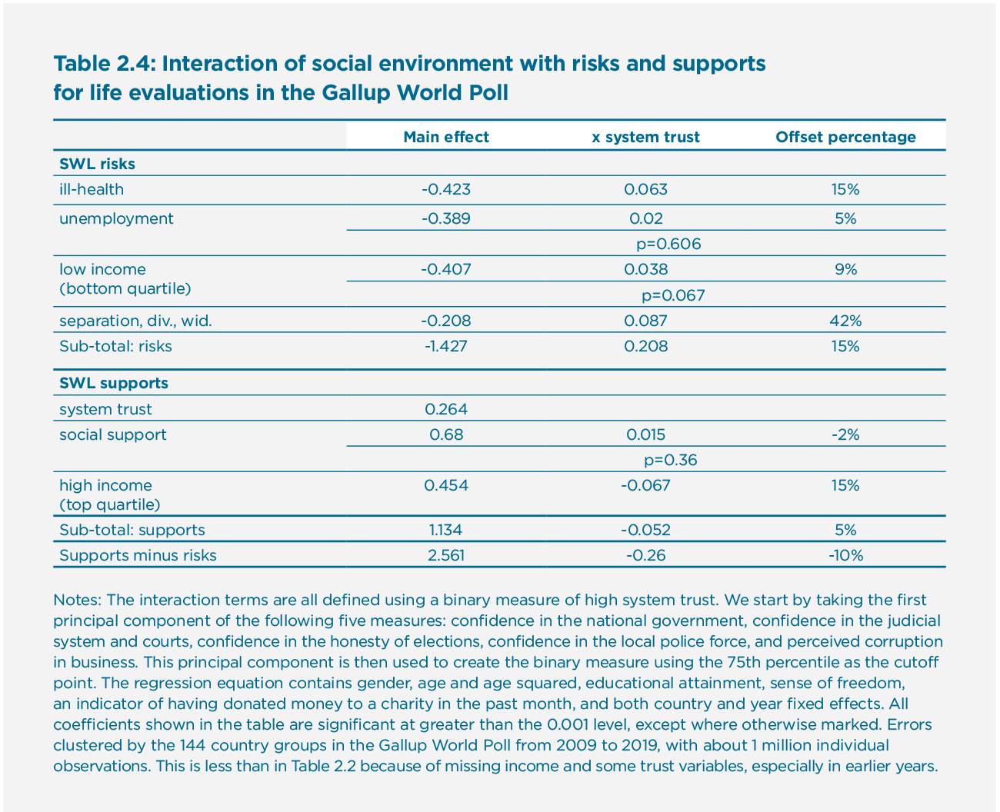
The results from the Gallup World Poll (GWP) show a very similar pattern to what we have already seen from the European Social Survey (ESS).[44] There is no social trust variable generally available in the Gallup World Poll, but a system trust variable has been generated that is analogous to the one used for the ESS analysis. The GWP results show a smaller direct health effect that is nonetheless significantly buffered for respondents who have more confidence in the quality of their public institutions.[45] We find in the GWP, as we did in the ESS, that the negative effects of low income and the positive effects of high income are of a similar magnitude in the two surveys, and are significantly buffered in both cases by the climate of institutional trust. Divorce, separation, and widowhood have negative effects in both surveys, and in both cases these effects are significantly buffered by institutional trust. Unemployment has a lower estimated life evaluation effect in the Gallup World Poll, and this effect is less significantly buffered by institutional trust. Overall, the two large international surveys both find that trust provides a significant offset to the negative well-being consequences of adverse events and circumstances.[46]
To get an overall measure of the importance of the social environment, we return to the ESS data, since it covers a larger range of social capital measures. Finding a realistic answer requires us to estimate how the social environment affects the level and distribution of life evaluations of the population taken as a whole. We do this by calculating for each ESS respondent what their life satisfaction would be, given their actual health, employment, income, personal social supports, and marital circumstances, under two different assumptions about the climate for social and institutional trust. One assumption is that everyone has trust levels equal to the average value from all those who report relatively low trust on a 0 to 10 scale.[47] The alternative is that everyone has the same levels of social and institutional trust as currently held by the more trusting 30% of the population. The calculations thus take into account the actual distributions of life circumstances, but different levels of trust. These trust differences alter each person’s life satisfaction both directly and indirectly (via the interaction effects in Table 2.3). The distributions are significantly different, reflecting the fact that the interactions are especially helpful for those under difficult circumstances. Living in a higher trust environment gives an average life satisfaction of 7.72, compared to 6.76 in the lower trust environment. These results take into account all of the effects reported in Table 2.3, and also now reflect the prevalence and distribution of the various individual-level risks and supports shown in Table 2.3. Distributions based on the details of individual lives enables us to calculate the consequences of different trust levels for the distribution of well-being. The effects of trust on inequality of well-being are very substantial. The dispersion of life satisfaction about its population average, as measured by the standard deviation, is more than 40% larger in the low trust environment.[48] As can be seen in Panel A of Figure 2.5, the high-trust distribution is not only less widely dispersed, but also the bulk of the changes have come at the bottom end of the distribution, improving especially the lives of those worst off.
Trust, as we have seen, is very important both directly and indirectly, for life evaluations. But there are more personal aspects of social capital that are important to the quality of life. In the case we have examined in Table 2.3, these include the frequency of social meetings and whether a respondent has one or more intimate friend. We can then use the distribution of these social connections to create a pair of happiness distributions that differ according to social connections. The fortunate group has one or more friends or relatives available for intimate discussions and has weekly or more frequent social meetings. The unfortunate group has neither of these forms of social support. We know that those with more supportive personal social connections and activity are more satisfied with their lives, but the reductions in inequality are expected to be less than in the trust case, since separate interaction effects are not estimated. This is confirmed by the results shown in Panel B of Figure 2.5 in which the well-connected population has life evaluations averaging 0.86 points higher than the group with weaker social connections. There is also a reduction in the dispersion of the distribution, but only by one-quarter as much as in the trust case.
Figure 2.5: Predicted life evaluations in differing social environments
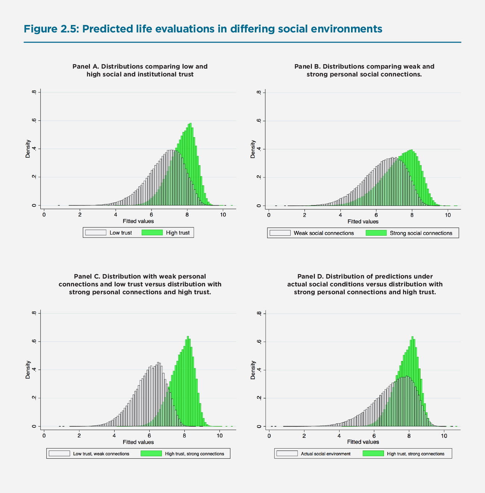
Next, as shown in Panel C of Figure 2.5, we can combine the estimated effects of trust and personal social connections as aspects of the social environment. One distribution covers people with low trust and weaker social connections, while the other gives everyone higher average trust and social connections. As before, the actual circumstances for all other aspects of their lives are unchanged. This provides the most comprehensive estimate of the total effects of the social environment on the levels and distribution of life satisfaction. The life evaluation difference provided by higher trust and closer social connections amounts to 1.8 points on the 10-point scale. While the reduction in inequality is very large in the combined case shown in Panel C, the reduction is slightly less than in the trust case on its own. This is because the primary inequality-reducing power of a better social environment comes from the interaction effects that enable higher trust to buffer the well-being effects of a variety of risks.
Finally, to provide a more realistic example that starts from existing levels of trust and social connections, we show in Panel D of Figure 2.5 a comparison of the predicted results in a high-trust strong-connection world with predicted values based on everyone’s actual reported trust and personal social connections. The differences are smaller than those in Panel C, since we are now comparing the high-trust case not with a low-trust environment, but with the actual circumstances of the surveyed populations. This is a more interesting comparison, since it starts with the current situation and asks how much better that reality might be if those who have low trust and social connections were to have the same levels as respondents in the more trusting and socially connected part of the population. This is in principle an achievable result, since the gains of trust and social connections do not need to come at the expense of those already living in more supportive social environments. It is apparent from Panel D that there are large potential gains for raising average well-being and reducing inequality at the same time. For example, the median respondent stands to gain 0.71 points, compared to an average gain of more than twice as much (1.51 points) for someone at the 10th percentile of the happiness distribution.[49] Conversely, the gains for those already at the 90th percentile of the distribution are much smaller (0.25 points). There are two reasons for the much smaller gains at the top. The main reason is that almost all those at the top of the happiness distribution are already living in trusting and connected social environments. The second reason is that they are individually less likely to be suffering from the risks shown in Table 2.4 and hence less likely to receive the buffering gains delivered by high social capital to those most in need.
Given that better social environments raise average life satisfaction and reduce the inequality of its distribution, we can use the results from our estimation of the effects of inequality to supplement the benefits shown in Panel D. To do this, we start with the actual distribution of life evaluations from each survey respondent, and then adjust each evaluation to reflect what their answer would have been if every respondent had the same levels of social and institutional trust as the average of the more trusting respondents, had weekly or more social meetings, had a confidante, and was not afraid in the streets after dark.[50] By comparing the degree of inequality in these two distributions, we get a measure of how much actual inequality would be reduced if everyone had reasonably high levels of social trust, institutional trust, and personal social connections. We calculate that the P80/20 ratio is reduced from 1.33 in the actual distribution on Panel D to 1.16 in the high trust and high connections case, a change of 0.17 points. To get an estimate of how much this might increase average life evaluations, we added the predicted P80/20 ratio reflecting actual conditions to our regression, where it attracts a coefficient of -0.33. We can thus estimate that moving from the current distribution of happiness to one with higher trust and social connections would lower inequality by enough to deliver a further increase in life satisfaction of 0.06 points.[51] This would be in addition to what is already included in Panel D of Figure 2.5.[52] In total, the combined effect of the better social environment, compared to the existing one, without any changes in the underlying incomes and other life circumstances, is estimated to be about 1.0 point.
These results may underestimate the total effects of better social environments, as they are calculated holding constant the existing levels of income and health, both of which have frequently been shown to be improved when trust and social connections are more supportive. There is also evidence that communities and nations with higher levels of social trust and connections are more resilient in the face of natural disasters and economic crises.[53] Fixing rather than fighting becomes the order of the day, and people are happy to find themselves willing and able to help each other in times of need.
But there are also possibilities that our primary evidence, which comes from 35 countries in Europe, may not be so readily applied to the world as a whole. Our parallel research with the Gallup World Poll in Table 2.4 gave somewhat smaller estimates, and showed effects that were somewhat larger in Europe than in the rest of the world. It is also appropriate to ask whether the trust answers reflect reality. Fortunately, experiments have shown that social trust measures are a strong predictor of international differences in the likelihood of lost wallets being returned.[54] There is also evidence that people are too pessimistic about the extent to which their fellow citizens will go out of their way to help return a lost wallet.[55] To the extent that trust levels are falsely low, better information in itself would help to increase trust levels. But there is clearly much more research needed about the creation and maintenance of a stronger social environment.
Conclusions
The rankings of country happiness are based this year on the pooled results from Gallup World Poll surveys from 2017-2019 and continue to show both change and stability. The top countries tend to have high values for most of the key variables that have been found to support well-being, including income, healthy life expectancy, social support, freedom, trust, and generosity, to such a degree that year to year changes in the top rankings are to be expected. The top 20 countries are the same as last year, although there have been ranking changes within the group. Over the eight editions of the Report, four different countries have held the top position: Denmark in 2012, 2013 and 2016, Switzerland in 2015, Norway in 2017, and now Finland in 2018, 2019 and 2020. With its continuing upward trend in average scores, Finland consolidated its hold on first place, now significantly ahead of an also-rising Denmark in second place, and an even faster-rising Switzerland in 3rd, followed by Iceland in 4th and Norway 5th. All previous holders of the top spot are still among the top five. The remaining countries in the top ten are the Netherlands, Sweden, New Zealand, and Austria in 6th, 7th, 8th, and 9th followed this year by a top-ten newcomer Luxembourg, which pushes Canada and Australia to 11th and 12th, followed by the United Kingdom in 13th, five places higher than in the first World Happiness Report. The rest of the top 20 include, in order, Israel, Costa Rica, Ireland, Germany, the United States, the Czech Republic, and Belgium.
At a global level, population-weighted life evaluations fell sharply during the financial crisis, recovered almost completely by 2011, and then fell fairly steadily to a 2019 value about the same level as its post-crisis low. These global movements mask a greater variety of experiences among and within global regions. The most remarkable regional dynamics include the continued rise of life evaluations in Central and Eastern Europe, and their decline in South Asia. More modest changes have brought Western Europe up and Northern America plus Australia and New Zealand down, with roughly equal averages for the two regions in 2019. As for affect measures, positive emotions show no significant trends, while negative emotions have risen significantly, mostly driven by worry and sadness rather than anger.
At the national level, most countries showed significant changes from 2008-2012 to 2017-2019, with slightly more gainers than losers. The biggest gainer was Benin, up 1.64 points and moving from the bottom of the ranking to near the middle. The biggest life evaluation drops were in Venezuela and Afghanistan, down by about 1.8 and 1.5 points respectively. India, with close to a fifth of global population, saw a 1.2-point decline.
We next consider how well-being inequality affects the average level of well-being, before turning to the main focus for this year’s chapter: how different features of the social environment affect the level and distribution of happiness. Using a variety of different measures for the inequality of well-being, we find a consistent picture wherein countries with a broader spread of well-being outcomes have lower average life evaluations. The effect is substantial, despite being measured with considerable uncertainty. This suggests that people do care about the well-being of others, so that efforts to reduce the inequality of happiness are likely to raise happiness for all, especially those at the bottom end of the well-being distribution. Second, as we showed in our analysis of the buffering effects of trust, anything that can increase social and institutional trust produces especially large benefits for those subject to various forms of hardship.
The primary result from our empirical analysis of the social environment is that several kinds of individual and social trust and social connections have large direct and indirect impacts on life evaluations. The indirect impacts, which are measured by allowing the effects of trust to buffer the estimated well-being effects of bad times, show that both social trust and institutional trust reduce the inequality of well-being by increasing the resilience of individual well-being to various types of adversity, including perceived discrimination, ill-health, unemployment, low income, and fear when walking the streets at night. Average life satisfaction is estimated to be almost one point higher (0.96 points) in a high trust environment than in a low trust environment.
The total effects of the social environment are even greater when we add in the well-being benefits of personal social connections, which provide an additional 0.87 points, for a total of 1.83 points, as shown in Panel C of Figure 2.5. This is considerably more than double the 0.8 point estimated life satisfaction gains from moving from the bottom to the top quintile of the income distribution.
To measure the possible gains from improving current trust and connection levels, we can compare the distribution of life evaluations under actual trust and social connections with what would be feasible if all respondents had the same average trust and social connections as enjoyed already by the more trusting and connected share of the population. The results are shown in Panel D of Figure 2.5. Average life evaluations are higher by more than 0.8 points, and the gains are concentrated among those who are currently the least happy. For example, those who are currently at the 10th percentile of the happiness distribution gain more than 1.5 points, compared to less than 0.3 points for those at the 90th percentile. The stronger social environment thereby leads to a significant reduction in the inequality of well-being (by about 13%), which then adds a further boost (about 0.06 points) to average life satisfaction. Moving from current levels of trust and social connections in Europe to a situation of high trust and good social connections is therefore estimated to raise average life evaluations by almost 0.9 on the 0 to 10 scale. Favourable social environments not only raise the level of well-being but also improve its distribution. We conclude that social environments are of first-order importance for the quality of life.
References
Akaeda, N. (2019). Contextual social trust and well-being inequality: From the perspectives of education and income. Journal of Happiness Studies, 1-23. https://doi.org/10.1007/s10902-019-00209-4
Aldrich, D. P., & Meyer, M. A. (2015). Social capital and community resilience. American Behavioral Scientist, 59(2), 254-269.
Annink, A., Gorgievski, M., & Den Dulk, L. (2016). Financial hardship and well-being: a cross-national comparison among the European self-employed. European Journal of Work and Organizational Psychology, 25(5), 645-657.
Anusic, I., & Lucas, R. E. (2014). Do social relationships buffer the effects of widowhood? A prospective study of adaptation to the loss of a spouse. Journal of Personality, 82(5), 367-378.
Atkinson, A.B. (2015). Inequality: What can be done? Cambridge: Harvard University Press.
Atkinson, A. B., & Bourguignon, F. (2014). Handbook of income distribution (Vols. 2A & 2B). Elsevier.
Branscombe, N., Daley, A., & Phipps, S. (2016). Perceived Discrimination, Belonging and the Life Satisfaction of Canadian Adolescents with Disabilities (No. daleconwp2016-04).
Chen, C., Lee, S. Y., & Stevenson, H. W. (1995). Response style and cross-cultural comparisons of rating scales among East Asian and North American students. Psychological Science, 6(3), 170-175.
Cohen, S., Doyle, W. J., Turner, R. B., Alper, C. M., & Skoner, D. P. (2003). Emotional style and susceptibility to the common cold. Psychosomatic Medicine, 65(4), 652-657.
Cohn, A., Maréchal, M. A., Tannenbaum, D., & Zünd, C. L. (2019). Civic honesty around the globe. Science, 365(6448), 70-73.
Danner, D. D., Snowdon, D. A., & Friesen, W. V. (2001). Positive emotions in early life and longevity: findings from the nun study. Journal of Personality and Social Psychology, 80(5), 804.
De Neve, J. E., Diener, E., Tay, L., & Xuereb, C. (2013). The objective benefits of subjective well-being. In J. F. Helliwell, R. Layard, & J. Sachs (Eds.), World Happiness Report 2013 (pp. 54-79). New York: UN Sustainable Development Solutions Network.
Doyle, W. J., Gentile, D. A., & Cohen, S. (2006). Emotional style, nasal cytokines, and illness expression after experimental rhinovirus exposure. Brain, Behavior, and Immunity, 20(2), 175-181.
Durand, M., & Exton, C. (2019). Adopting a well-being approach in central government: Policy mechanisms and practical tools. In Global Happiness Council, Global happiness and wellbeing policy report 2019 (pp. 140-162). http://www.happinesscouncil.org
Evans, R. G., Barer, M. L., & Marmor, T. R. (Eds.). (1994). Why are some people healthy and others not? The determinants of the health of populations. New York: De Gruyter.
Fredrickson, B. L. (2001). The role of positive emotions in positive psychology: The broaden-and-build theory of positive emotions. American psychologist, 56(3), 218-226.
Frijters, P., & Layard, R. (2018). Direct wellbeing measurement and policy
appraisal: a discussion paper. London: LSE CEP Discussion Paper.
Gandelman, N., & Porzecanski, R. (2013). Happiness inequality: How much is reasonable? Social Indicators Research, 110(1), 257-269.
Goff, L., Helliwell, J., & Mayraz, G. (2018). Inequality of subjective well-being as a comprehensive measure of inequality. Economic Inquiry 56(4), 2177-2194.
Helliwell, J. F. (2019). Measuring and Using Happiness to Support Public Policies (No. w26529). National Bureau of Economic Research.
Helliwell, J. F., Aknin, L. B., Shiplett, H., Huang, H., & Wang, S. (2018). Social capital and prosocial behavior as sources of well-being. Handbook of well-being. Salt Lake City, UT: DEF Publishers. DOI: nobascholar.com.
Helliwell, J. F., Huang, H., & Wang, S. (2018). New evidence on trust and well-being. In E. M. Uslaner (Eds.), The Oxford handbook of social and political trust (pp. 409-446). New York: Oxford University Press.
Helliwell, J. F., Bonikowska, A., & Shiplett, H. (2020). Migration as a test of the happiness set point hypothesis: Evidence from Immigration to Canada and the United Kingdom. Canadian Journal of Economics (forthcoming).
Helliwell, J. F., & Wang, S. (2011). Trust and well-being. International Journal of Wellbeing, 1(1), 42-78.
Kalmijn, W., & Veenhoven, R. (2005). Measuring inequality of happiness in nations: In search for proper statistics. Journal of Happiness Studies, 6(4), 357-396.
Kawachi, I. (2018). Trust and population health. In E. M. Uslaner (Ed.), The Oxford handbook of social and political trust (pp. 447-470). New York: Oxford University Press.
Keeley, B. (2015). Income inequality: The gap between rich and poor. OECD Insights, Paris: OECD Publishing.
Kuhn, U., & Brulé, G. (2019). Buffering effects for negative life events: The role of material, social, religious and personal resources. Journal of Happiness Studies, 20(5), 1397-1417.
Marmot, M. (2005). Social determinants of health inequalities. The Lancet, 365(9464), 1099-1104.
Marmot, M., Ryff, C. D., Bumpass, L. L., Shipley, M., & Marks, N. F. (1997). Social inequalities in health: Next questions and converging evidence. Social Science & Medicine, 44(6), 901-910.
Neckerman, K. M., & Torche, F. (2007). Inequality: Causes and consequences. Annual Review of Sociology, 33, 335-357.
Nichols, S. & Reinhart, R.J. (2019) Well-being inequality may tell us more about life than income. https://news.gallup.com/opinion/gallup/247754/wellbeing-inequality-may-tell-life-income.aspx
OECD (2015). In it together: Why less inequality benefits all. Paris: OECD Publishing. DOI: http://dx.doi.org/10.1787/9789264235120-en.
OECD (2017). How’s life?: Measuring well-being. Paris: OECD Publishing.
Piketty, T. (2014). Capital in the 21st Century. Cambridge: Harvard University Press.
Rojas, M. (2018). Happiness in Latin America has social foundations. In J. F. Helliwell, R. Layard, & J. Sachs (Eds.), World Happiness Report 2018 (pp. 89-114). New York, Sustainable Development Solutions Network. https://worldhappiness.report/ed/2018/
Yanagisawa, K., Masui, K., Furutani, K., Nomura, M., Ura, M., & Yoshida, H. (2011). Does higher general trust serve as a psychosocial buffer against social pain? An NIRS study of social exclusion. Social Neuroscience, 6(2), 190-197.
Endnotes
The evidence and reasoning supporting our choice of a central role for life evaluations, with supporting roles for affect measures, have been explained in Chapter 2 of several World Happiness Reports, and have been updated and presented more fully in Helliwell (2019). ↩︎
The statistical appendix contains alternative forms without year effects (Table 12 of Appendix 1), and a repeat version of the Table 2.1 equation showing the estimated year effects (Table 11 of Appendix 1). These results confirm, as we would hope, that inclusion of the year effects makes no significant difference to any of the coefficients. ↩︎
As shown by the comparative analysis in Table 10 of Appendix 1. ↩︎
The definitions of the variables are shown in Technical Box 1, with additional detail in the online data appendix. ↩︎
This influence may be direct, as many have found, e.g. De Neve et al. (2013). It may also embody the idea, as made explicit in Fredrickson’s broaden-and-build theory (Fredrickson, 2001), that good moods help to induce the sorts of positive connections that eventually provide the basis for better life circumstances. ↩︎
See, for example, the well-known study of the longevity of nuns, Danner, Snowdon, and Friesen (2001). ↩︎
See Cohen et al. (2003), and Doyle et al. (2006). ↩︎
We put the contributions of the six factors as the first elements in the overall country bars because this makes it easier to see that the length of the overall bar depends only on the average answers given to the life evaluation question. In World Happiness Report 2013 we adopted a different ordering, putting the combined Dystopia+residual elements on the left of each bar to make it easier to compare the sizes of residuals across countries. To make that comparison equally possible in subsequent World Happiness Reports, we include the alternative form of the figure in the online Statistical Appendix 1 (Appendix Figures 7-9). ↩︎
These calculations are shown in detail in Table 20 of online Statistical Appendix 1. ↩︎
The prevalence of these feedbacks was documented in Chapter 4 of World Happiness Report 2013, De Neve et al. (2013). ↩︎
We expect the coefficients on these variables (but not on the variables based on non-survey sources) to be reduced to the extent that idiosyncratic differences among respondents tend to produce a positive correlation between the four survey-based factors and the life evaluations given by the same respondents. This line of possible influence is cut when the life evaluations are coming from an entirely different set of respondents than are the four social variables. The fact that the coefficients are reduced only very slightly suggests that the common-source link is real but very limited in its impact. ↩︎
The coefficients on GDP per capita and healthy life expectancy were affected even less, and in the opposite direction in the case of the income measure, being increased rather than reduced, once again just as expected. The changes were very small because the data come from other sources, and are unaffected by our experiment. However, the income coefficient does increase slightly, since income is positively correlated with the other four variables being tested, so that income is now able to pick up a fraction of the drop in influence from the other four variables. We also performed an alternative robustness test, using the previous year’s values for the four survey-based variables. This also avoided using the same respondent’s answers on both sides of the equation, and produced similar results, as shown in Table 13 of Statistical Appendix 1 in World Happiness Report 2018. The Table 13 results are very similar to the split-sample results shown in Tables 11 and 12, and all three tables give effect sizes very similar to those in Table 2.1 in reported in the main text. Because the samples change only slightly from year to year, there was no need to repeat these tests with this year’s sample. ↩︎
There has been a corresponding drop in Canada’s ranking, from 4th in 2012 to 11th in 2020. Average Cantril ladder scores for Canada fell from 7.42 in 2017 to 7.17 in 2018 and 7.11 in 2019. The large-scale official surveys measure life satisfaction every year, so some cross-checking is possible. The data for 2019 are not yet available, but for the larger Canadian Community Health Survey there is no drop from 2017 to 2018. The smaller General Social Survey shows a drop from 2017 to 2018, although survey cycle effects make the magnitude hard to establish. ↩︎
The United Kingdom’s rise in Cantril ladder score of .277 points from 2008-2012 to 2017-2019 (as shown in Figure 2.4) closely matches the rise of 0.25 points, or 3.4% in UK life satisfaction from March 2013 to March 2019, as measured by the much larger surveys of the Office for National Statistics. Those more detailed data show the largest increases to have taken place in London, as reported in https://www.ons.gov.uk/peoplepopulationandcommunity/wellbeing/bulletins/measuringnationalwellbeing/april2018tomarch2019 ↩︎
This footprint affects average scores by more for those countries with the largest immigrant shares. The extreme outlier is the United Arab Emirates (UAE), with a foreign-born share exceeding 85%. The UAE also makes a distinction between nationality and place of birth, and oversamples the national population to obtain larger sample sizes. Thus it is possible in their case to calculate separate average scores 2017-2019 for nationals (6.98), the locally born (6.85), and the foreign-born (6.76). The difference between their foreign-born and locally-born scores is very similar to that found on average for the top 20 countries in the 2018 rankings. ↩︎
These calculations come from Table 21 in Statistical Appendix 1. ↩︎
The data are shown in Table 21 of Statistical Appendix 1. Annual per capita incomes average $51,000 in the top 10 countries, compared to $2,500 in the bottom 10, measured in international dollars at purchasing power parity. For comparison, 94% of respondents have someone to count on in the top 10 countries, compared to 61% in the bottom 10. Healthy life expectancy is 73 years in the top 10, compared to 56 years in the bottom 10. 93% of the top 10 respondents think they have sufficient freedom to make key life choices, compared to 70% in the bottom 10. Average perceptions of corruption are 33% in the top 10, compared to 73% in the bottom 10. ↩︎
Actual and predicted national and regional average 2017-2019 life evaluations are plotted in Figure 43 of Statistical Appendix 1. The 45-degree line in each part of the Figure shows a situation where the actual and predicted values are equal. A predominance of country dots below the 45-degree line shows a region where actual values are below those predicted by the model, and vice versa. East Asia provides an example of the former case, and Latin America of the latter. ↩︎
For example, see Chen et al. (1995). ↩︎
One slight exception is that the negative effect of corruption is estimated to be slightly larger, although not significantly so, if we include a separate regional effect variable for Latin America. This is because perceived corruption is worse than average in Latin America, and its happiness effects there are offset by stronger close-knit social networks, as described in Rojas (2018). The inclusion of a special Latin American variable thereby permits the corruption coefficient to take a higher value. ↩︎
Some countries do not have data in all years over the duration of the study period (2006–2019). We impute the missing data by using the neighboring year’s data. The first wave of Gallup World Poll was collected in 2005 and 2006. We treat them all as 2006 observations in the trend analysis. ↩︎
These results may all be found in Figure 2.1 of World Happiness Report 2018. ↩︎
See, for example, Atkinson (2015), Atkinson and Bourguignon (2014), Kennedy et al. (1997), Keeley (2015), OECD (2015), Neckerman and Torche (2007), and Piketty (2014). ↩︎
See Helliwell, Huang, and Wang (2016). See also Goff et al. (2018), Gandelman and Porzekanski (2013), and Kalmijn and Veenhoven (2005). ↩︎
See, for example, Evans et al. (1997), Marmot et al. (1994), and Marmot (2005). ↩︎
See Goff et al. (2018) for estimates using individual responses from several surveys, including the Gallup World Poll, the European Social Survey, and the World Values Survey. ↩︎
See Goff et al. (2018), Table 6. ↩︎
Following the example of Nichols and Reinhart (2019). ↩︎
The predicted values are obtained by estimating a life evaluation equation from the entire micro sample of GWP data, based on a version of the Table 2.1 equation suitable for this application, and then using the results to create predicted values for each individual in every year and country. These values are then used to build predicted distributions for each year and country, and these distributions are in turn used to construct percentile ratios for each country and year. ↩︎
See Goff et al. (2018), Table 6. ↩︎
See Table 17 in the online Statistical Appendix 1 of World Happiness Report 2019. ↩︎
The importance of local environments is emphasized by more recent research showing that the happiness of immigrants to different regions of Canada and the United Kingdom approaches the happiness of other residents of those regions (Helliwell et al., 2020). This is a striking finding, especially in the light of the fact, illustrated by the city rankings of Chapter 3, that life evaluation differences among cities in a country are far smaller than differences between countries. ↩︎
The adjusted R-squared is 0.350. Without country fixed effects, the adjusted R-squared is 0.318. ↩︎
This move is measured by the difference, in points, between the averages of the good and very good responses and of the fair, poor and very poor responses. The poor-health group comprises 35% of the ESS respondents. ↩︎
The effects of unemployment on happiness are roughly one-third greater for males than females, while the effect of feeling unsafe on the street is more than 60% greater for males. Weekly or more frequent social meetings add 25% more happiness for females than for males. The sample frequencies of circumstances can also differ by gender, with males 25% more likely to be unemployed, and 15% less likely to see the streets as unsafe. The frequency of weekly or more social meetings is the same for male and female respondents. Full results may be found in Statistical Appendix 3. ↩︎
For social trust, the value of 7 is the lower bound of the high trust group, since that provides the same share of high trusters, about 30%, that is provided in the same countries when people are asked a binary question on social trust. We use the same lower bound for trust in police. For institutional trust, where assessments are generally lower, we adopt a lower bound of 5.5, since that puts about 30% of respondents into the high-trust group. ↩︎
See Helliwell et al. (2018) and Helliwell, Aknin et al. (2018). ↩︎
Yanagisawa et al. (2011) provide experimental evidence that social trust reduces the psychosocial costs of social exclusion, while Branscombe et al. (2016) show that a sense of community belonging buffers the life satisfaction effects of perceived discrimination felt by disabled youth. ↩︎
Although there have been many studies showing links between trust and actual or perceived ill-health (See Kawachi (2018) for a recent review), there has not been corresponding analysis of whether and how trust might affect the links running between actual or perceived health and life evaluations. ↩︎
Akaeda (2019), using data from the European Quality of Life Survey, also finds that higher social trust (in his case using national averages for social trust) significantly reduces the effects on income on life evaluations. Akaeda assumes symmetric effects from top and bottom incomes, while we estimate the two effects separately and find them to be of roughly equivalent size. ↩︎
Our findings on this score are consistent with those of Annick et al. (2016), who find that high social trust reduces the estimated losses of subjective well-being caused by perceived financial hardship among self-employed respondents to two waves of the European Social Survey. ↩︎
As shown in Statistical Appendix 3, each of the three main effect trust coefficients is between .06 and .07 for a one point change in the 0 to 10 scale, for a total of more than two points on the life evaluation scale for someone who has full trust on the 0 to 10 scale relative to someone who has zero trust in all three dimensions. To get a figure that matches more closely the rest of the table, we separate the respondents into those with high trust (7 and above for social and police trust, 5.5 and above for system trust) and with lower trust (<7 and <5.5, respectively), and find the average responses for high and low trusters, for each of the trust measures taken separately. We then multiply the difference between high and low trust responses (4.05, 3.72, and 4.26 for social trust, system trust, and police trust) by the estimated coefficients in the equation to get the total direct contributions shown in the left-hand column of the Table. ↩︎
These social resources have also been considered as possible sources of life-satisfaction buffering in the face of adverse events. Kuhn and Brulé (2019) found social support to be a buffer in the case of unemployment, but not ill-health or widowhood using a Swiss longitudinal survey. Anusic and Lucas (2014) found that the size of the available network of friends during the adaption phase of adjustment to widowhood lessened the loss of life satisfaction in each of the three national longitudinal surveys used, although the effects were significant in one of the three surveys. We tested the interaction of widowhood and high frequency of meeting with friends in the ESS data, and found no significant effects. ↩︎
To further check the consistency of the two sets of results, we estimated the GWP equation using a subsample of the data including only the countries covered by the ESS. This produced larger offset estimates, closer to those estimated for the ESS sample. ↩︎
The individual health variable in the GWP reflects only a yes or no answer to whether the individual has a serious health problem, while the ESS contains a five-point scale for each respondent to assess their health status. This difference is the most likely source of the differing health effect. ↩︎
But there is some evidence that the direct and indirect effects of institutional trust may be larger in Europe than in the rest of the world. This is shown by Table 13 in Statistical Appendix 1, where we find effects that are generally larger and more significant for the European countries in the Gallup World Poll. ↩︎
We define low as less than 5.5 for system trust, and less than 7 for social trust and trust in police. Our reason for choosing these thresholds is that such a division produces a high-trust population share most equal to that of respondents to a social trust question asked on a yes/no binary basis. ↩︎
1.04 vs. 0.73. ↩︎
More precisely, the calculation reflects the difference between the 10th percentiles of the two distributions. ↩︎
Thus what we are doing is taking, for each individual, the difference between their scores in the two distributions shown in Panel D of Figure 2.5, and then adding these to their actual recorded answers on the 0 to 10 scale. The effects are generally positive, but not necessarily so, as there will be some individuals whose actual trust and social meetings were higher than the average high values attributed to them in the high-trust, strong social connection scenario of Table 2.4 Panel D. ↩︎
More precisely, the reduction of 0.170 in the P8020 ratio is multiplied by the coefficient of -0.331 to get a predicted further increase of 0.056 in life evaluations, rounded to 0.06 in the text. ↩︎
There is a possible element of double-counting here if the coefficients in Table 2.3 are already taking some of the credit for the inequality effects, since the inequality variable is not included in the equation used in that table. To investigate the possible size of such an effect, we re-estimated the distribution for high-trust and high social connections making use of coefficients from the alternative equation with inequality included. The resulting effects are negligible. The new coefficients do lower the expected gains, but by a negligible 0.0005 of a point, as the mean happiness drops from 7.931 to 7.926. ↩︎
See Aldrich and Meyer (2015) for a review of the evidence on community-level resilience. ↩︎
Wallet return questions were asked in 132 countries in the 2006 Gallup World Poll. Those with a high expected wallet return were significantly happier, by an amount more than equivalent to a doubling of income (Helliwell & Wang, 2011, table 2-d). These expectations of wallet return reflect underlying realities, as the average national rates of expected wallet return, if found by a stranger, are highly correlated (r = 0.83, p < 0.001) with the actual return of wallets for the 16 countries in both samples in a recent large experimental study (Cohn et al., 2019). ↩︎
The actual rates of wallet return in the international study of Cohn et al. (2019) were far higher than predicted by the Gallup World Poll respondents described in the previous end-note. Similarly, experimentally dropped wallets in Toronto were returned in 80% of cases, while respondents to the Canadian General Social Survey asked about the likely return of their lost wallets in the same city forecast a return rate of less than 25%. See Helliwell et al. (2018) and Helliwell, Aknin et al. (2018) for the details. ↩︎